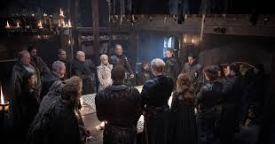
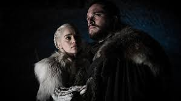

Game Elements
Story
As the game Game of Winter is based on the show Game Of Thrones, the story line of the 2 charactersin the game would be according to the series. Dany and John will go on with thier lives in each level as they did in the show, facing all those difficulties and challenges that they faced in the series. The war, the winter, the army of the dead, the power struggle are all there.
In this version of the game, we will see the 2 main characters and their lives from the series. Daenerys Targaryen and Jon Snow. The players will play to their deaths (in Dany's case) or banishment (in John's case) as in the series. A certain death may occur if deviated from the orignal story path.
Daenerys Targaryen's Story Line
The story of Dany's life in Game Of Winter is depicted in the following activity diagram.

John Snow's Story Line
The story of John's life in Game Of Winter is depicted in the following activity diagram.

Characters

The project will include 2 characters each with their own life, story and gameplay in the beggining and then merging into one asthe story goes.
The 2 main characters are: Daenerys Targaryen and Jon Snow.
The side characters such as Jorah Mormont, Roose Bolton, Jon's family, Dany's friends, wildling, the dead, Lord Commander Mormont, Cercie Lanister and Her Family are all the characters in the game who will be playing the part in making the storyline and dipicting the perfect series-like look and feel.
Locations

The locations for the Game Of Winter is similar to the locations in the show.
We will be looking at:
Winterfell
The Wall
Dragon Stone
Qarth
Mareen
King's Landing
Levels
Game of Winter basically tells and shows the lives of different characters in Game of Thrones and depicts the challenges that they faced as game levels. The player selects the character, from the menu, he wants to play as. the game starts from the beggining of the character's life in the show. A story line with levels based on challenges each time harder than the one before according to the GOT Series.
The players will play the full story of thier life as in the show but deviating from that story line might cause a certain death. as in the series.
Level 1
Start of the journey
Opening/ introductory events
Level 2
Achievements
Bad News
Level 3
Dillemma
Dragons
Conquests
Level 4
Battle of the bastards
Dragon Stone
Level 5
Meetup
Alignment of Forces
battle of Winterfell
Level 6
War on King's Landing
Destruction
Death
Menu